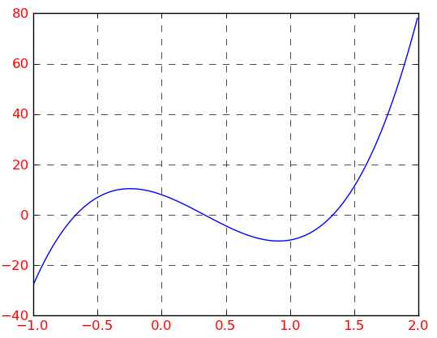

★★
1) Ecrire une fonction qui retourne la valeur de la fonction mathématique f(x)= 27x3 -27x2-18x +8 :
>>> print(f(0), f(1), f(0.5), f(0.25), f(0.375))
8.0 -10.0 -4.375 2.234375 -1.123046875
2) On se propose de chercher les zéros de cette fonction par la méthode de dichotomie.
Ecrire le script correspondant.
>>>
Recherche d'un zéro dans l'intervalle [a,b]
a? 0
b? 1
Précision ? 1e-12
0.5
0.25
0.375
0.3125
0.34375
0.328125
0.3359375
0.33203125
0.333984375
0.3330078125
0.33349609375
0.333251953125
...
...
0.333333333333
>>>
3) Chercher tous les zéros de cette fonction.
Annexe : représentation graphique de la fonction f(x)= 27x3 -27x2 -18x +8 (graphique réalisé avec la librairie matplotlib de Python)

Créé avec HelpNDoc Personal Edition: Créer des documentations web iPhone